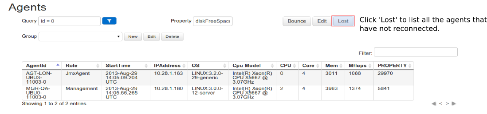

Overview
Installation Guide
Common Deployment Scenarios
Contact
Updating Logscape
Logscape can upgraded by uploading packages from the deployment page. The update procedure is the same for all Operating Systems.
- Bounce your system before beginning and check that all your agents have come back without any problems. To check if any Agents have been lost after restarting the system, go to the Agents page and then click Lost
- Download and unzip the latest zip archive.
- On the deployment page, click 'upload' and browse to the downloads folder and select all the files .

- The downloads will be uploaded to the manager and then pushed to all the agents installed in your deployment
- Once all the downloads are finished, bounce the system.
- Once the system has restarted. Login and check that all your agents are up and running on the Agents page. 
Note: Do not use the MSI when updating Logscape
After each update make sure that you clear your browser cache.